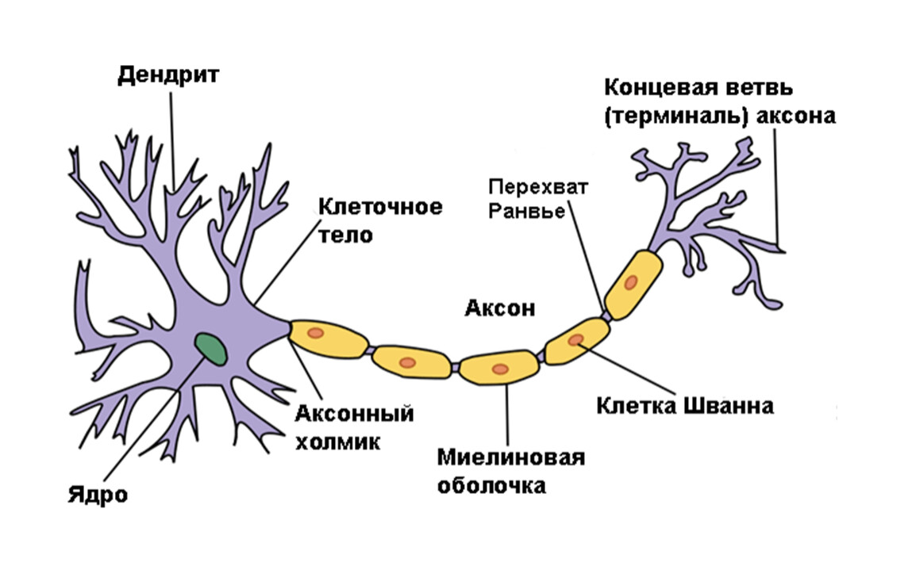
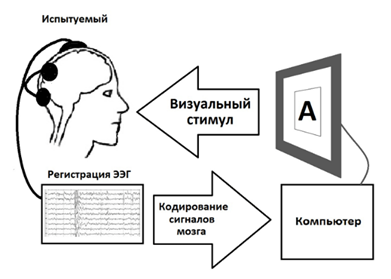

Лекция 32. ИИ - усилитель деятельности мозга. Средства и носители ИИ. Примеры применения
Биокомпьютеры рассматривают электронную машину как подобие мозга. Элементарной основой мозга является, как мы думаем, нейрон. Изучив нейрон и сделав его электронную копию
аппаратно, а затем запустив такой чип в тираж, можно на стенде собирать из них нейронную сеть, проверяя на соответствие её работу и работу мозга.

Структура нейрона
Однако, как оказалось пока дешевле сымитировать работу нейрона программно на типовой электронной машине. Одна функция имитирует работу одного нейрона, которую потом
вызывают большое количество раз, имитируя параметры каждого индивидуального нейрона и их соединения.
Еще один подход, описанный многократно в художественной литературе - изъятие биологической нейронной ткани у трупа и погружение её в питательную среду. Таким образом
решается проблема организации самого мозга, но сложно организовать интерфейс образца с компьютером. Кроме того, опыты показали, что биологическую ткань можно сохранить
невредимой только в течение 100 дней.
Большие надежды сейчас возлагают на оптические машины. Известны прямые имитации транзисторов и структур цифровых машин на фотонной основе. Также используют матрицы, которые
преобразуют сразу множество параллельных лучей света. Это позволяет преобразовывать огромную информацию всего пучка света параллельно. Матрицы управляемы со стороны
компьютерной программы и пропускают или не пропускают свет в отдельных своих частях согласно логике обработки. Пропуская пучки света через множество электрически
управляемых матриц-транспарантов, можно преобразовать одномоментно большой блок информации. Известны российские реализации чипов со скоростью работы в 50 петафлопс.
16 октября 1998 года в Университете Рединга Кевин Уорик имплантировал себе в руку электрический чип, соединив его выводы с нервом своей руки. Второй чип был внедрен в
электрический выключатель. Чипы общались друг с другом по радиоканалу. Давая мысленно команду «включить свет», Кевин тем самым посылал нейроимпульс руке,
который передавался в чип и выключатель - свет загорался силой мысли. Можно считать эту дату временем появления первого киборга. Очень перспективное направление,
дающее возможность биопротезированием восполнить часть утраченных функций организма. А также усиливать отдельные функции человека, соединяя его преимущества и достоинства
компьютера, взаимно компенсируя недостатки обоих.
Одевая на голову шлем, улавливающий электрические сигналы мозга, можно передавать их на информационный разъём компьютера. На экране компьютера в этом случае рисуют
виртуальную клавиатуру, клавиши которой можно нажимать рисованным указателем.

Самое трудное здесь понять, какой импульс в электроэнцефалограмме за что отвечает. В опытах над
людьми, утратившими в результате тяжёлого заболевания способность общаться голосом и жестами, на экране компьютера устанавливали положение указателя, произвольно зависящего
от сложного сигнала мозга. Самое интересное, что после определённой тренировки мозг испытуемого за счет своей пластичности приноравливался сам думать так, чтобы указатель
нажимал нужную клавишу на экране. В набираемой строке в результате получалась фраза, которую мог прочитать врач.
В ряде случаев больному человеку требуется постоянный мониторинг ряда жизненно важных параметров тела. Например, можно имплантировать микротермометр в ухо или другие
датчики в разные части тела и регулярно передавать их значения в медицинское учреждение для контроля. В нужный момент компьютерная система сама подаст сигнал тревоги.
А если ещё внедрить в тело пациента контейнер с концентрированными лекарственными средствами, то по обратному сигналу от врача в экстренных случаях они могут быть
вспрыснуты в организм больного оперативно. В Японии внедрена сантехника, которая берёт ежедневный утренний анализ биожидкостей человека, мгновенно отправляя его на монитор
участкового врача.
В 2002 году были произведены первые опыты по передаче эмоций непосредственно от одного человека другому через нейронный интерфейс. Поскольку наши эмоции есть продукт головного мозга.
В Париже очень ценят старинные городские вязы. Вживление датчиков, непрерывно фиксирующих их состояние, позволило специальной бригаде по их показаниям целенаправленно и оперативно выезжать
для подкормки и полива деревьев.
На опасных участках работы используются роботы, умеющие обезвреживать подозрительные предметы. Во многих странах ведется работа по созданию автопилотов, способных без
участия человека решать подобные задачи на месте автономно.
Датчики, установленные на животных, позволяют проводить их учет на фермах и пастбищах, контролировать состояние животных и их местоположение.
Традиционным применением ИИ является умный дом, который согласно настроенной модели и благодаря домашним датчикам включает и выключает свет, музыку, тепло в комнатах в
зависимости от нахождения там человека, учитывая его привычки, традиционное расписание и маршруты хозяина. Датчики протечки воды вовремя сами вызовут аварийную службу.
Например, выезжая с работы, можно дистанционно включить батареи в доме и приготовить ванну. Можно имитировать нахождение человека в дома звуками, включая и выключая свет
в комнатах для убедительности в моменты его отсутствия. Видео наблюдение распознаёт опасные и криминальные ситуации около дома. Анализ содержимого холодильника, даты
покупки и сроки хранения продуктов, указанные на QR-кодах, позволят умному дому сформировать заказ на нужные продукты через службу доставки.
Серьёзной проблемой мегаполиса являются ударные нагрузки потребления электроэнергии. Мы традиционно встаём в 7 часов утра, включая свет, чайник, кофеварку, телевизор.
Такие синхронные действия множества людей в городе приводят к повышенному износу электросетей и электрогенераторов. Есть пассивные и активные электроприборы.
Активные, это те, включение которых отложить нельзя, например, чайник. К пассивным относится стиральная машина, которая может быть заряжена утром, но готова сама
включиться в работу тогда, когда общее потребление электроэнергии в городе будет минимально. Для этого умные устройства должны быть подключены к Интернету, чтобы получать
информацию о нагрузке силовой сети через сайт компании, поставляющей энергию. Если чайник хозяином поставлен на максимальный запрос, то он вскипятит воду даже при большой
нагрузке сети и по высокому тарифу оплаты за электроэнергию. Однако, если хозяин готов подождать и снизил значение запроса, то чайник, сравнив это значение с текущим
тарифом на сайте, отложит свою работу. Такие механизмы выравнивают нагрузку в сети, снижая ее износ.
Шильдик с чипом на рубашке сообщит чипу стиральной машины параметры её стирки и совместимость с другими предметами. Чип утюга готов принять информацию от чипа рубашки о её
температурном режиме глажки.
Умный пистолет в чужих руках не выстрелит, проанализировав отпечаток держащей его ладони или радиосигнал полицейского, автомобиль не заведётся, дверь не откроется.
Умные дорожные знаки на управляемых световых табло позволяют регулировать городские дорожные потоки наилучшим образом. Данные о потоках собираются Интернетом по скоплению
сигналов от сотовых телефонов. Интернет позволяет объединить сигналы множества устройств и местоположения людей. Совместное насыщение дома и города такими решениями
формирует умную среду.
Отдельного разговора заслуживают нанотехнологии, несущие одновременно могущество и опасность.